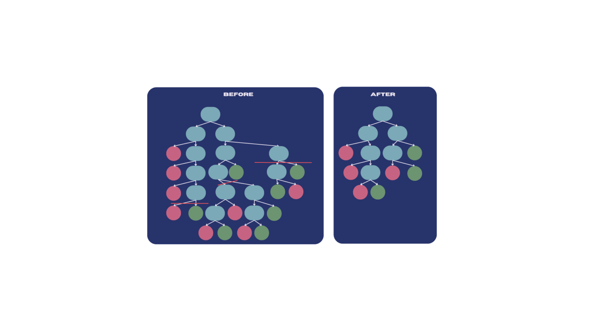

6 Week6 - Classification-I
6.1 Summary
In this week, we explore the use of Google Earth Engine (GEE) for geospatial analysis. We start by loading administrative boundary data from the FAO GAUL global admin layers and proceed to work with Sentinel-2 surface reflectance data. The session covers cloud masking techniques, classification using supervised classifiers like Random Forest, and accuracy assessment.
GEE Data Catalog: The class discusses how to search and load data from the Google Earth Engine (GEE) data catalog, specifically focusing on FAO GAUL global admin layers and Sentinel data.
Script and Code Examples: It provides example code for loading and filtering data, applying cloud masks, and handling Sentinel data.
Classification Process: The page explains the process of classification using supervised classifiers like CART, RandomForest, NaiveBayes, and SVM, including steps for training and validating the model.
Training Data: Instructions are given on how to select and use training data within the study area, including generating samples and merging polygons into a feature collection.
6.2 Classification Process
Classification is a supervised learning technique used to categorize data points into predefined classes or categories based on input features. The goal is to learn a mapping from input variables to a set of discrete outcomes (labels) using a training dataset where the correct labels are known.
6.2.1 Principles of Classification(Sokal, R. R. , 19741; Zonneveld, I. S. , 19942)
Training Phase: During this phase, the classifier learns from labeled training data by identifying patterns and relationships between the input features and their corresponding labels. Popular algorithms for classification include decision trees, random forests, support vector machines, and neural networks.
Prediction Phase: After training, the classifier is used to predict the class of new, unseen data points based on the patterns it has learned.
Evaluation: The classifier’s performance is evaluated using various metrics like accuracy, precision, recall, and the F1 score. Cross-validation is often employed to ensure the model generalizes well to new data.
6.2.2 Applications of Classification
Classification is widely used across various domains, including:
- Medical Diagnosis:
Classification techniques, particularly deep learning, play a crucial role in medical diagnostics. According to Mihalj Bakator and Mihalj Bakator (2018)3, deep learning methods like Convolutional Neural Networks (CNNs) are extensively used in tasks such as diagnosis, classification, and prediction within medical image analysis. Although deep learning has shown significant potential, it is not yet capable of fully replacing doctors, highlighting the need for a collaborative approach between technology and human expertise.

- Spam Detection: Email filtering systems classify emails as “spam” or “not spam” using algorithms like Naive Bayes(A. Almomani et al., 20134; Bahgat et al., 20165).

6.3 Challenges: Overfitting
One of the significant challenges in the classification process is overfitting. Overfitting occurs when a model learns not only the underlying patterns in the training data but also the noise and outliers. As a result, the model performs exceptionally well on the training data but poorly on unseen data because it has become too complex and specific to the training examples.
To mitigate overfitting in decision trees, a common approach is to prune the tree, which simplifies the model by removing less significant branches(Friedman, J., 20096;Quinlan, J. R. ,2014.7). The effectiveness of this pruning process can be quantified using the Tree score formula:
\[Tree score = SSR + TreePenalty_{alpha}* T_{Mumber Of Leaves}\]
During the pruning process of decision trees, we use a parameter called ccp_alpha (cost complexity parameter) to control the extent of pruning. A higher value of this parameter indicates a greater tendency to remove more leaf nodes, thereby simplifying the tree structure.
Let’s understand why removing more leaf nodes leads to a larger \(ccp_{\alpha}\):
Gini Impurity and Tree Complexity
Gini impurity is a metric used to measure the purity of a dataset, with smaller values indicating higher purity(Breiman, L., 20178).
During pruning, we aim to retain leaf nodes that positively contribute to the model’s performance while reducing the complexity of the model.
When we remove a leaf node, the Gini impurity increases because we lose the purity associated with that leaf node.

6.3.1 Cost Complexity:
\(ccp_{\alpha}\) is a cost complexity parameter(Quinlan, J. R. ,2014.9; Breiman, L., 201710) that balances the fit and complexity of the model during pruning.
By increasing ccp_alpha, the model tends to remove more leaf nodes, thereby reducing the complexity of the model.
The purpose of this is to prevent overfitting and improve the generalization ability of the model.
6.4 Reflection
This week’s focus on classification techniques using Google Earth Engine (GEE) highlighted the critical challenge of overfitting in remote sensing models. Overfitting leads to models that perform well on training data but struggle with new data. The introduction of cost complexity pruning, particularly the role of ccp_alpha, emphasized the need to balance model complexity and generalization.
Working with Random Forest classifiers in GEE provided practical insights into managing this balance. The process of selecting training data, evaluating models, and understanding the impact of pruning deepened my understanding of how to create robust models that can adapt to diverse environmental conditions.
As I progress, I’m eager to apply these concepts to more complex datasets, refining strategies to improve model performance while avoiding overfitting. Balancing detailed data capture with model robustness remains a key focus in my ongoing work.
6.5 Reference
Sokal, R. R. (1974). Classification: Purposes, Principles, Progress, Prospects: Clustering and other new techniques have changed classificatory principles and practice in many sciences. Science, 185(4157), 1115-1123.↩︎
Zonneveld, I. S. (1994). Basic principles of classification. In Ecosystem classification for environmental management (pp. 23-47). Dordrecht: Springer Netherlands.↩︎
Bakator, Mihalj, and Dragica Radosav. 2018. “Deep Learning and Medical Diagnosis: A Review of Literature” Multimodal Technologies and Interaction 2, no. 3: 47. https://doi.org/10.3390/mti2030047↩︎
A. Almomani, B. B. Gupta, S. Atawneh, A. Meulenberg and E. Almomani, “A Survey of Phishing Email Filtering Techniques,” in IEEE Communications Surveys & Tutorials, vol. 15, no. 4, pp. 2070-2090, Fourth Quarter 2013, doi: 10.1109/SURV.2013.030713.00020.↩︎
Bahgat, E.M., Rady, S., Gad, W. (2016). An E-mail Filtering Approach Using Classification Techniques. In: Gaber, T., Hassanien, A., El-Bendary, N., Dey, N. (eds) The 1st International Conference on Advanced Intelligent System and Informatics (AISI2015), November 28-30, 2015, Beni Suef, Egypt. Advances in Intelligent Systems and Computing, vol 407. Springer, Cham. https://doi.org/10.1007/978-3-319-26690-9_29↩︎
Friedman, J. (2009). The elements of statistical learning: Data mining, inference, and prediction. (No Title).↩︎
Quinlan, J. R. (2014). C4. 5: programs for machine learning. Elsevier.↩︎
Breiman, L. (2017). Classification and regression trees. Routledge.↩︎
Quinlan, J. R. (2014). C4. 5: programs for machine learning. Elsevier.↩︎
Breiman, L. (2017). Classification and regression trees. Routledge.↩︎